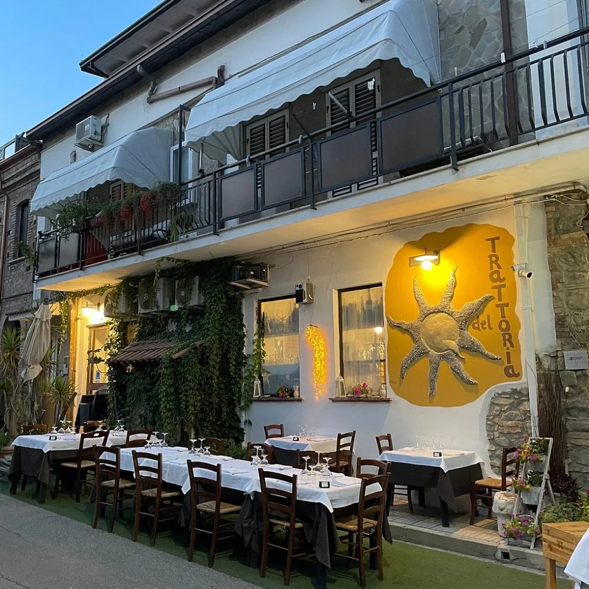
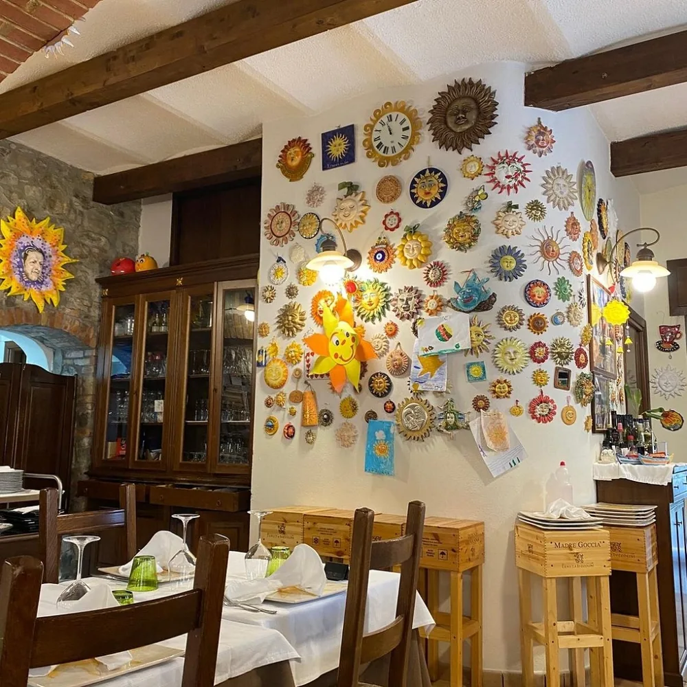

La prova del cuoco
La vittoria nella sfida “Il Campanile”, rappresentando la Calabria.
IN TVUna storia di famiglia, una cucina di mare
A Trebisacce, la Calabria si racconta
nel modo più bello: intorno a una tavola.


Le cose belle hanno radici profonde
Nel 1970 Vincenzo e Filomena aprono una piccola osteria. Pochi tavoli e i sapori delle campagne di Plataci, il loro paese d’origine: è così che comincia la storia del Sole.
Dal 1999, Domenico e Giusy, con il sostegno di Rosa, ne continuano il racconto. La cucina incontra il pesce fresco locale e i vini della Calabria, senza dimenticare da dove tutto è partito.
Dalla nostra tavola, un po’ più lontano
Un percorso passato anche dalla televisione e dai grandi eventi, portando con sé i sapori di casa.
La vittoria nella sfida “Il Campanile”, rappresentando la Calabria.
IN TVLe specialità calabresi a Casa Sanremo, in occasione della 71ª edizione del Festival.
EVENTO GASTRONOMICOLa Trattoria del Sole protagonista per cinque puntate del programma di Rai 1.
IN TV · RAI 1I ricordi più belli li portate voi
Uno spazio per le esperienze autentiche
di chi sceglie la Trattoria del Sole.
Qui potranno comparire le recensioni da una fonte autorizzata, con aggiornamenti automatici.
Nessuna recensione inventata. Nessun collegamento in tempo reale attivo in questa demo.
Trebisacce · Calabria
Prova il percorso di prenotazione. Nessuna richiesta sarà inviata.
Ci trovate qui
Via Piave, 14Per giorni e orari di apertura,
contattare direttamente il locale.